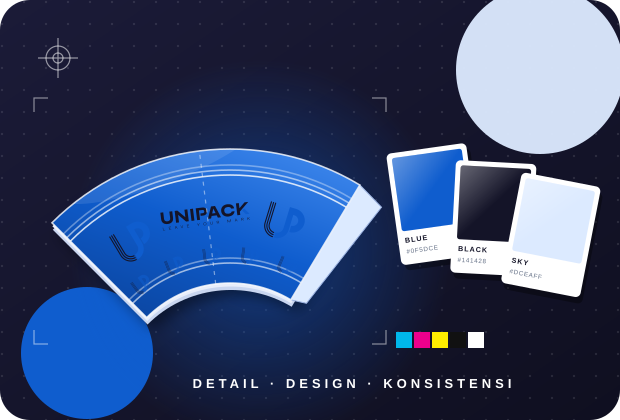

Universe
+ Packaging
“Uni” menggambarkan dunia dan ragam kemungkinan. “Pack” mewakili fokus pada kemasan yang mendukung bisnis.
ABOUT UNIPACK
Unipack membawa semangat untuk menjadikan kemasan sebagai bagian dari pengalaman dan identitas sebuah bisnis.

OUR STORY / 2017—NOW
17+Bertumbuh bersama kebutuhan kemasan bisnis kuliner sejak 2017.
CV Bersama Jaya merupakan usaha di bidang produksi dan sablon kemasan yang berlokasi di Malang. Perjalanan usaha ini dimulai pada 2017 dengan melayani kebutuhan kemasan bagi pelaku usaha, khususnya bidang makanan dan minuman.
Unipack dikembangkan sebagai arah identitas brand yang membawa gagasan lebih luas: kemasan bukan hanya pelindung produk, tetapi juga media untuk memperkenalkan karakter usaha kepada pelanggan.
Melalui pilihan cup plastik, paper cup, wadah makanan, dan tas kemasan, Unipack ingin membantu setiap bisnis menghadirkan tampilan yang lebih konsisten pada produk yang mereka sajikan.
WHAT WE BELIEVE
Nama dan identitas Unipack dibangun dari gagasan tentang kemasan yang menyatukan fungsi, visual, serta kesan terhadap sebuah brand.
“Uni” menggambarkan dunia dan ragam kemungkinan. “Pack” mewakili fokus pada kemasan yang mendukung bisnis.
Slogan yang mengajak brand untuk meninggalkan kesan melalui kemasan yang dekat dengan pelanggan.
Karakter Unipack diarahkan agar terlihat profesional dan modern, namun tetap mudah didekati.
OUR PRINCIPLES
Menjaga keselarasan antara kebutuhan produk dan tampilan identitas visual.
Memahami kebutuhan pelanggan melalui konsultasi sebelum proses produksi.
Mempertimbangkan bentuk dan material kemasan sesuai fungsi penggunaannya.